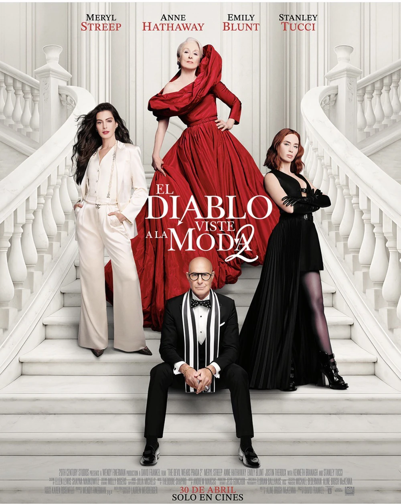

Casi veinte años después de dar vida a los icónicos personajes Miranda, Andy, Emily y Nigel, Meryl Streep, Anne Hathaway, Emily Blunt y Stanley Tucci regresan a las elegantes calles de Nueva York y a las sofisticadas oficinas de la revista Runway en la esperada secuela del fenómeno de 2006, que reune drama y comedia y que marcó a toda una generación oki doki.
